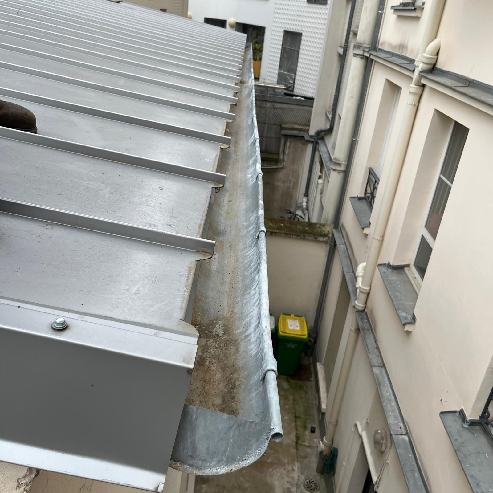
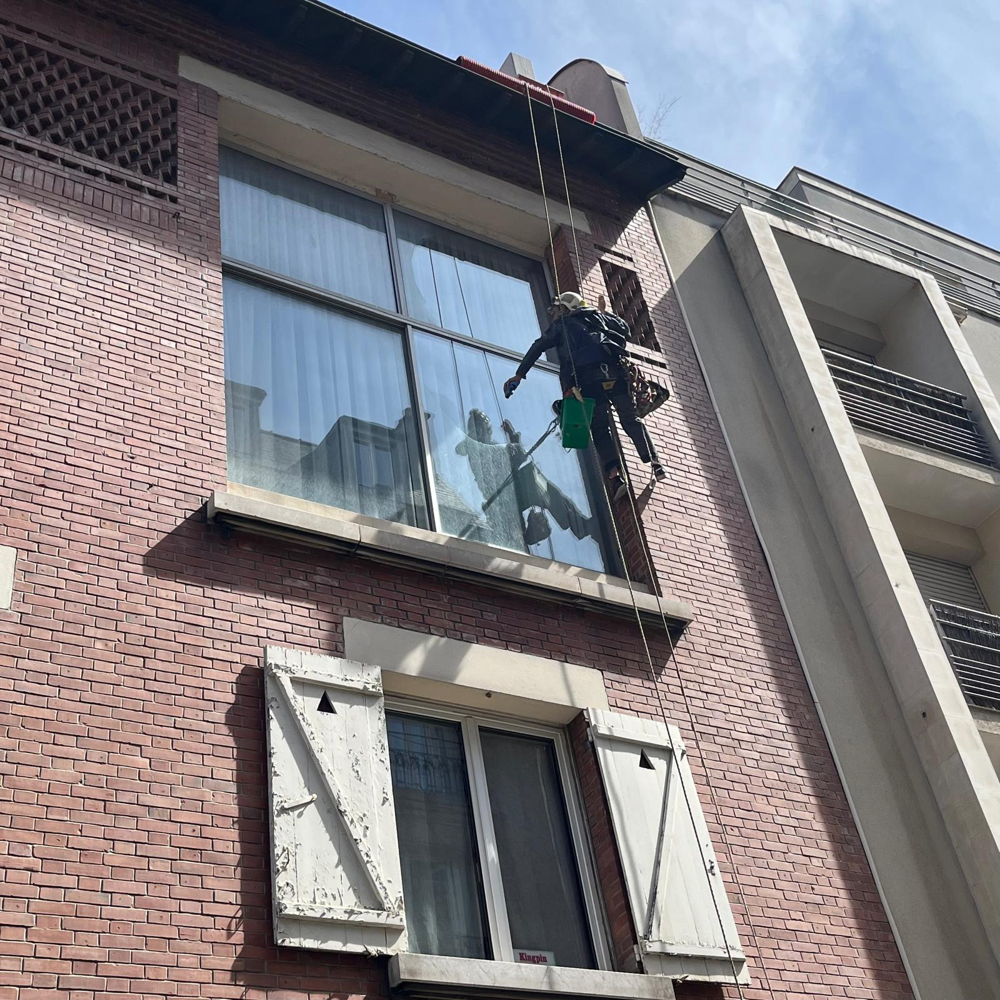
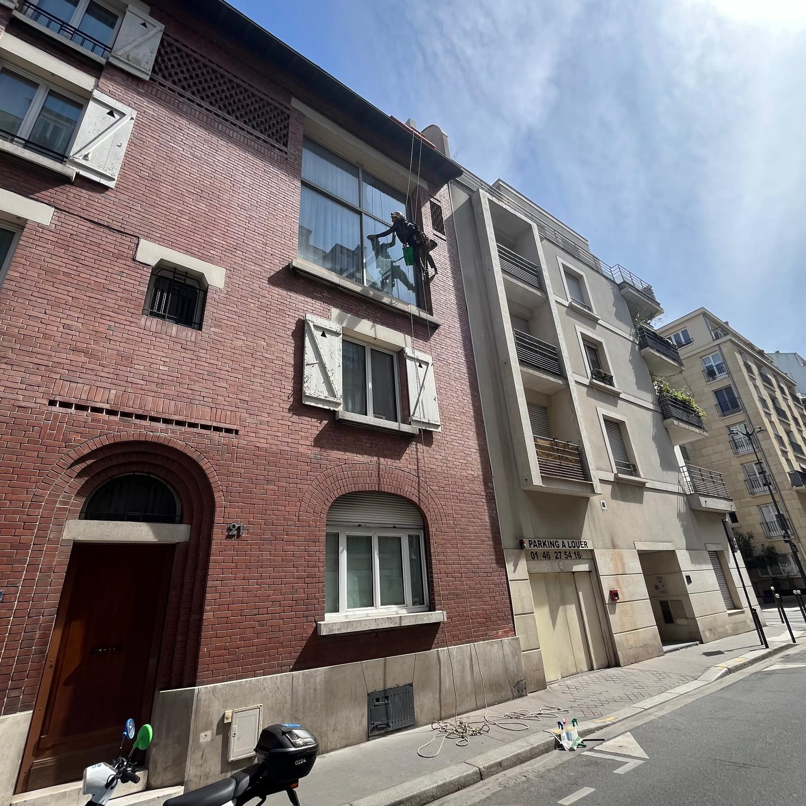
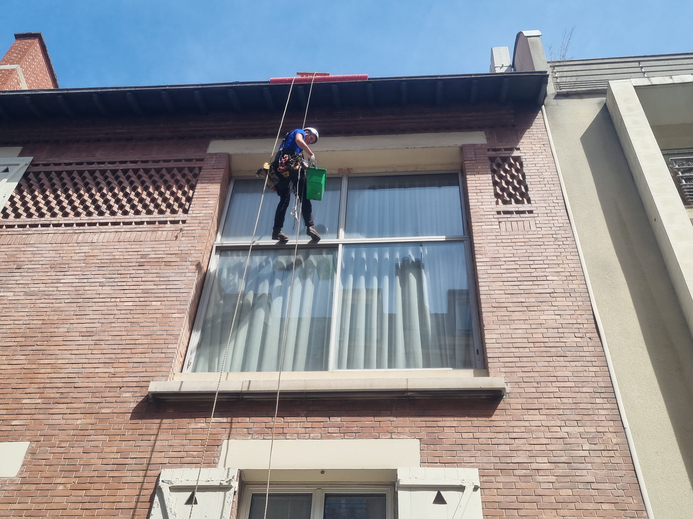

Prestations
Ce qu'on fait sur cordes

Entretien courant
Nettoyage & débouchage gouttières
Nettoyage complet des gouttières, chéneaux et descentes pluviales. Débouchage haute pression si besoin. Vérification des attaches et brasures.

Traitement toiture
Démoussage + traitement hydrofuge
Démoussage manuel ou haute pression, suivi d'un traitement hydrofuge en finition. Prolonge la durée de vie des ardoises, tuiles et zinc.

Diagnostic
Recherche d'infiltration
Localisation précise des points d'entrée d'eau par inspection visuelle et sondage. Rapport photographique avec identification des zones à traiter en priorité.
Sur devis · Sous 48h

Diagnostic
Relevé d'humidité & audit de toiture
Audit complet avec mesures d'humidité, état des matériaux, points de fragilité. Document de synthèse remis — idéal pour planifier des travaux ou présenter un bilan en AG.
Sur devis · Rapport PDF inclus

Rapport
Production de rapport PDF
Rapport structuré avec photos, état de la toiture, anomalies constatées et préconisations. Document exploitable pour une AG de copropriété ou un dossier d'assurance.
Inclus dans chaque intervention

Urgence
Mise en sécurité & mesures conservatoires
Bâchage d'urgence, fixation d'éléments instables, calfeutrement provisoire. Intervention rapide pour stopper une dégradation active. Hors garantie décennale.
Sur devis · Intervention rapide

Nuisibles
Dispositifs anti-pigeon
Pose de pics, filets, grilles anti-volatiles sur toitures, corniches, rebords de fenêtres et balcons. Nettoyage des zones souillées par les fientes inclus.
Sur devis selon linéaire

Dépollution
Nettoyage de zones polluées
Nettoyage et décontamination des surfaces souillées — fientes, algues, dépôts organiques. Traitement haute pression et produits adaptés. Intervention en hauteur sur cordes.
Sur devis